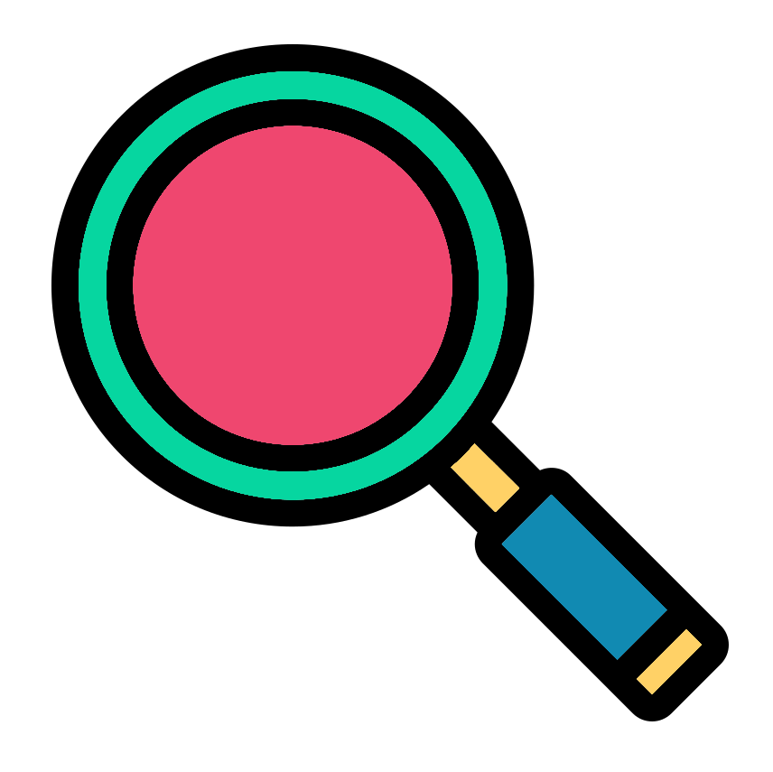

#Soil vs Reads
metadf |>
ggplot2::ggplot(aes(x = Soil, y = Reads)) +
ggplot2::geom_boxplot()Correlation exploration

When choosing which metadata variables to use and not to use it is not enough to know which ones are correlated. What we want to know most of the time is which ones are collinear. In essence we don’t want to use 2 metadata variables that have directly/indirectly measured the same thing.
In this page we’ll look at two different types of comparisons.
- Categorical vs continuous
- Categorical vs categorical
If you had 2 appropriate continuous variables to compare I would suggest a scatterplot with linear model.
Categorical vs continuous
A quick way to look for correlation of a continuous and categorical variable is with box plots.
Soil vs Reads
First we’ll compare Soil against Reads which had a correlation value of 0.41 (not very strong).
In the resulting plot we can see that Bulk Soil samples have a higher range of read depths compared to Rhizosphere Soil. However, this is expected and this actually shows us why we should use Reads as a continuous control variable.
RNA vs Volume_ul
The variables RNA and Volume_ul have a very strong correlation (0.89). Let’s compare with another box plot.
#RNA vs Volume_ul
metadf |>
ggplot2::ggplot(aes(x = RNA, y = Volume_ul)) +
ggplot2::geom_boxplot()There’s definitely a correlation. Let’s look at these variables a bit more.
#Count combinations of DNA and Volume_ul
metadf |>
#Group by RNA and Volume_ul
dplyr::group_by(RNA,Volume_ul) |>
#Count number of distinct groupings
dplyr::summarise(n=n())
TipCookbook links for Tidyverse functions used above
In this case I would most likely not use Volume_ul. There are only 3 values and 2 of them (25 & 28) are only found in RNA samples whilst the third (30) is only found in DNA samples.
Categorical vs categorical
To compare two categorical variables we will create heatmaps containing counts.
Soil vs Plate
Our Soil and Plate variables have a correlation value of 0.8 which is very high. Let’s find out why.
Create a heatmap of counts which includes the values as text.
#Soil vs Plate count heatmap
metadf |>
dplyr::count(Soil,Plate) |>
ggplot2::ggplot(aes(x=Soil, y=Plate, fill=n)) +
ggplot2::geom_tile() +
#Add text containing count values
ggplot2::geom_text(aes(label=n), color="white", size=10)
TipCookbook links for Tidyverse functions used above
We can see that the correlation is caused by most of the Bulk Soil samples being on Plate 2 whilst all the Rhizosphere Soil samples are on Plate 1.
I would still use Plate as a random effect to account for the differences it may cause to the Bulk Soil samples.
Soil vs Cell
The Soil and Cell variables had total correlation with a correlation value of 1.
Create another count heatmap to see why.
#Soil vs Cell count heatmap
metadf |>
dplyr::count(Soil,Cell) |>
ggplot2::ggplot(aes(x=Soil, y=Cell, fill=n)) +
ggplot2::geom_tile() +
ggplot2::geom_text(aes(label=n), color="white", size=5)Here we can see that each cell only has 2 samples and each cell only has Rhizosphere Soil samples or Bulk Soil samples. This indicates Cell would not be very useful as a random effect because it would lead to small random effect sizes.
I have a hunch how the cells are being used. In this dataset we have paired samples where the original sample was DNA derived and RNA derived (RNA variable). Let’s compare the Cell variable to the Barcode variable which designates the original sample.
#Barcode vs Cell count heatmap
metadf |>
dplyr::count(Barcode,Cell) |>
ggplot2::ggplot(aes(x=Barcode, y=Cell, fill=n)) +
ggplot2::geom_tile() +
ggplot2::geom_text(aes(label=n), color="white", size=5)My hunch was correct. Barcode and Cell are completely collinear and I wouldn’t use either in any analysis.
RNA vs Type
You may have noticed that RNA and Type completely correlate with a value of 1. Create a count heatmap to see why.
#RNA vs Type count heatmap
metadf |>
dplyr::count(RNA,Type) |>
ggplot2::ggplot(aes(x=RNA, y=Type, fill=n)) +
ggplot2::geom_tile() +
ggplot2::geom_text(aes(label=n), color="white", size=10)In this case these two variables are completely collinear as they measure the same thing. The RNA value of DNA is DNA for Type. The RNA value of RNA is cDNA for Type. Therefore, I would use one or the other, my preference would be RNA.
Soil vs RNA
For the purposes of completeness let’s look at two variables with very low correlation. The correlation value of Soil and RNA is very low (6.7e-18).
Create a count heatmap.
#Soil vs RNA count heatmap
metadf |>
dplyr::count(Soil,RNA) |>
ggplot2::ggplot(aes(x=Soil, y=RNA, fill=n)) +
ggplot2::geom_tile() +
ggplot2::geom_text(aes(label=n), color="white", size=5)Perfect! We have the Bulk Soil and Rhizosphere Soil samples completely divided by RNA. In this case it is because each original sample that was collected was used to make a RNA derived and a DNA derived sequencing sample.
Finish
Excellent! As you can see from this exploration the choice of metadata variables is going to be very dependant on your dataset and your questions. I can’t give you a nice tidy decision tree to determine whether a metadata variable should be included or not. Rather, you need to understand what you want, what the various metadata variables represent, and how you will use the variables.